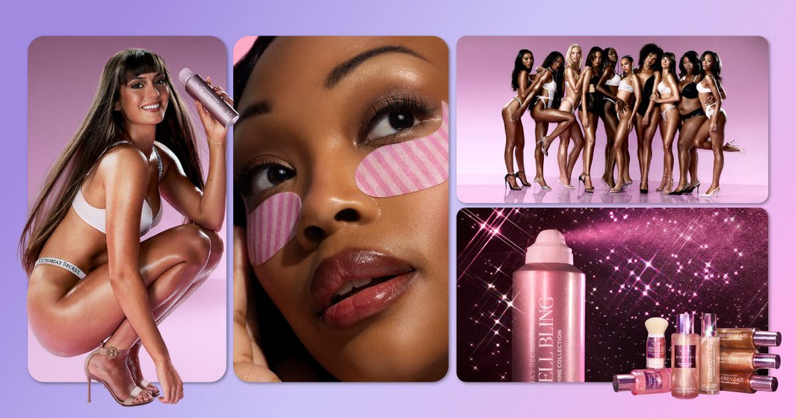

Victoria's Secret использует показ мод для продвижения расширения красоты и первого в истории партнерства по уходу за кожей
Глянцевые интервью с Эми Кокурек, президентом Victoria's Secret & PINK Beauty, о расширении компании в сфере красоты в преддверии модного показа 2026 года.